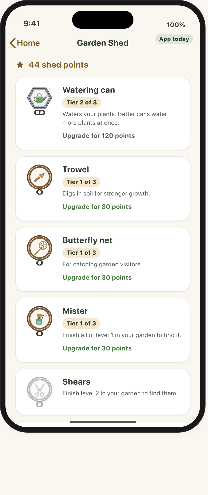
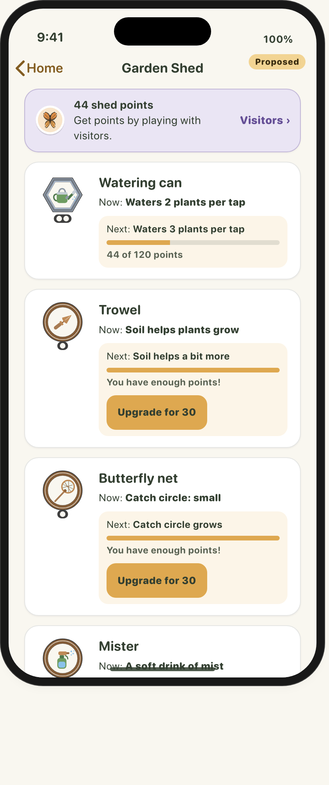
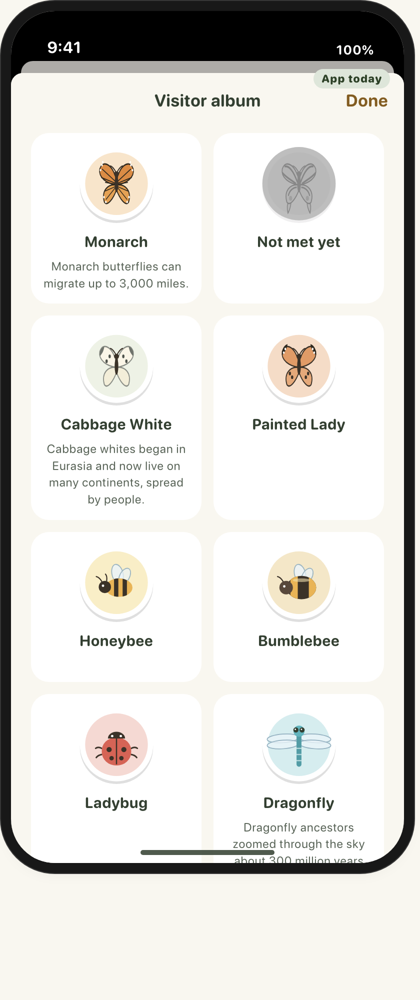
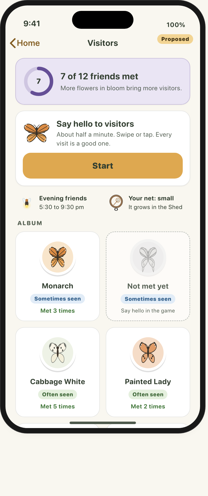
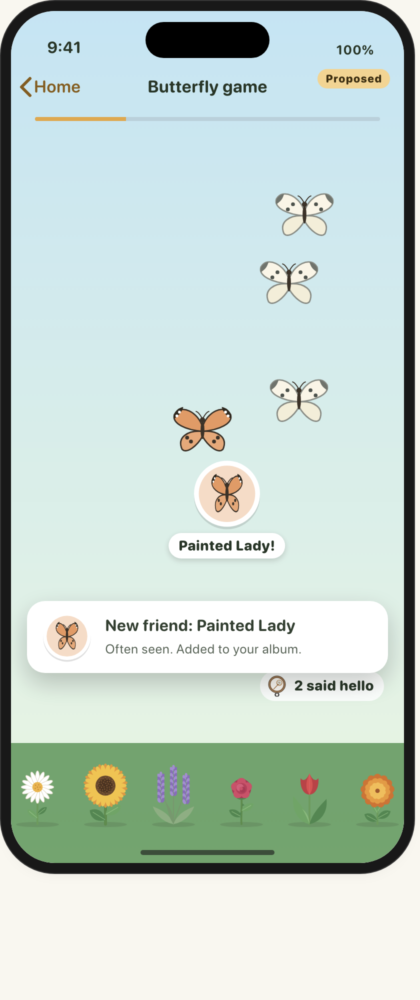
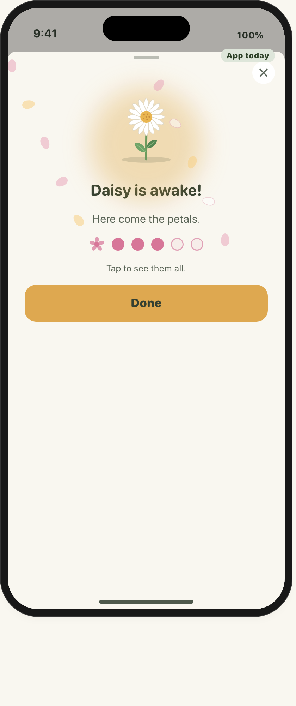

Screen mockups for three parts of WordFlora that had no screen page yet: the Garden Shed, Garden Visitors, and the Butterfly game. Each page shows the app as it is built today, then a proposed version. iPhone frames are 393 by 852, in light, dark and large text.


Shed points, six tools with three tiers each, and the Pots grid.


Twelve real visitors and the sticker album.


Playable in the browser: drag the net or tap. Free play and "Wake Daisy".
Differences between the app and these mockups, with file and line: docs/pm/shed-visitors-notes.md. Art: brand/v4/svg/ (visitors, tools), pots/pots.json, plants/.